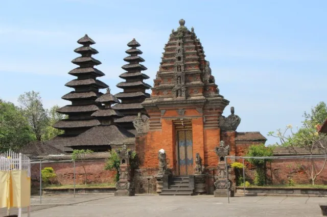

SEJARAH PERADABAN BALI
Peradaban Bali tidak terbentuk secara instan, melainkan hasil akulturasi ribuan tahun yang sangat kaya antara tradisi megalitikum lokal, spiritualitas Hindu-Buddha India, serta tatanan feodal kerajaan besar Nusantara. Berikut adalah garis waktu perjalanan sejarah Pulau Dewata:
Era Bali Kuno & Wangsa Warmadewa
Pada masa ini, Bali diperintah oleh dinasti lokal pertamanya, yaitu Wangsa Warmadewa. Suku sosial masyarakat masih sangat kental dengan kultur agraris dan spiritual kuno. Bahasa yang digunakan dalam birokrasi adalah Bahasa Bali Kuno yang ditulis menggunakan Aksara Pallawa.
Peninggalan monumental dari era ini adalah Prasasti Blanjong (914 M) di Sanur yang dikeluarkan oleh Raja Sri Kesari Warmadewa. Uniknya, prasasti ini memuat teks dalam dua bahasa (Sanskerta dan Bali Kuno) serta dua aksara (Nagari dan Kawi), menjadi bukti otentik tertua hubungan Bali dengan dunia luar.
 Ilustrasi Situs
Purbakala Bali Kuno
Ilustrasi Situs
Purbakala Bali Kuno
Ekspedisi Majapahit & Era Kerajaan Gelgel
Tahun 1343 menjadi titik balik masif ketika Kerajaan Majapahit di bawah komando Panglima Gajah Mada menaklukkan Bali. Penaklukan ini memicu migrasi besar-besaran bangsawan, rohaniwan, dan seniman dari Jawa ke Bali membawa pengaruh kebudayaan Jawa-Hindu (Sastra Kawi, arsitektur, dan sistem kasta) yang begitu kuat.
Ketika Majapahit runtuh di Jawa akibat perkembangan kesultanan Islam, Bali menjadi benteng pertahanan utama kebudayaan Hindu Nusantara. Kerajaan Samprangan dan kemudian Kerajaan Gelgel di bawah pemerintahan Raja Dalem Baturenggong berhasil menyatukan Bali dan membawa pulau ini ke puncak keemasan seni, sastra, tata ruang subak, hingga hukum adat.

Ilustrasi Kompleks Pura Luhur BersejarahKolonialisme & Peristiwa Puputan
Memasuki abad ke-19, kolonial Belanda mulai menginvasi Bali secara perlahan dari utara melalui Perang Buleleng. Puncaknya terjadi invasi militer besar-besaran di Bali Selatan yang melahirkan Peristiwa Puputan (Puputan Badung 1906 dan Puputan Klungkung 1908).
Puputan adalah tradisi perang habis-habisan sampai titik darah penghabisan di mana seluruh keluarga kerajaan, bangsawan, beserta rakyat memilih mati bertempur di medan laga daripada menyerah dan tunduk menjadi budak penjajah. Nilai kepahlawanan puputan inilah yang kini abadi menjadi dasar harga diri masyarakat Bali.
 Monumen Nilai
Juang Ksatria Bali
Monumen Nilai
Juang Ksatria Bali
STRUKTUR BAHASA BALI (ANGGAH-UGUHING)
Bahasa Bali merupakan salah satu bahasa daerah yang sangat unik karena memiliki sistem krama atau strata linguistik yang disebut Anggah-Uguhing Base Bali. Stratifikasi ini bukan sekadar pembeda kelas, melainkan wujud tata krama, etika bersosialisasi, serta penghormatan yang tinggi kepada lawan bicara berdasarkan usia, kedudukan sosial, atau hubungan kekerabatan.
Base Alus (Bahasa Halus)
Merupakan tingkatan bahasa tertinggi. Digunakan secara formal dalam upacara keagamaan, pidato adat, pembicaraan dengan Sulinggih (pendeta), tokoh adat, orang tua, atau orang yang baru pertama kali dikenal demi menjaga kehormatan. Base Alus dibagi lagi menjadi Alus Singgih (menghormati orang lain) dan Alus Sor (merendah untuk diri sendiri).
| Kata Dasar (Indonesia) | Terjemahan Base Alus | Contoh Penerapan Kalimat |
|---|---|---|
| Makan | Ngarsayang / Amukti | "Ida Peranda sampun ngarsayang rayunan." (Beliau pendeta sudah menyantap makanan.) |
| Tidur | Sirep / Makolem | "Kelian adat jagi makolem ring jero." (Ketua adat mau tidur di rumah beliau.) |
Base Madia (Bahasa Madya / Menengah)
Merupakan tingkatan bahasa menengah yang semi-formal. Kalimatnya terasa sopan namun tidak terlalu kaku, biasa dipakai dalam interaksi sosial sehari-hari di pasar, transportasi umum, atau lingkungan kerja antara rekan sejawat yang belum terlalu akrab.
| Kata Dasar (Indonesia) | Terjemahan Base Madia | Contoh Penerapan Kalimat |
|---|---|---|
| Makan | Madaar | "Tiang durung madaar niki, Pak." (Saya belum makan ini, Pak.) |
| Tidur | Madingan | "Wenten raris ipun madingan irika." (Lalu dia beristirahat/tidur di sana.) |
Base Andap / Kasor (Bahasa Biasa / Akrab)
Tingkatan bahasa dasar atau kasual yang digunakan tanpa beban strata sosial. Bahasa ini umum dipakai oleh sesama teman sebaya yang sudah sangat akrab (sahabat dekat), orang tua kepada anak kandungnya, atau percakapan informal dalam keluarga inti. Jangan gunakan bahasa ini kepada orang asing karena dinilai tidak sopan.
| Kata Dasar (Indonesia) | Terjemahan Base Andap | Contoh Penerapan Kalimat |
|---|---|---|
| Makan | Ngajeng / Colek | "Cai suba ngajeng busan?" (Kamu sudah makan tadi?) |
| Tidur | Mules / Pedem | "Ia enu pedem di kamarne." (Dia masih tidur di kamarnya.) |
Sistem Aksara Lontar
Selain bahasa lisan, Bali merawat Aksara Bali, tulisan silabik tradisional yang terdiri dari 47 karakter. Di zaman modern, aksara ini dilestarikan melalui penulisan papan nama jalan wajib di Bali, dokumen digital, hingga penulisan naskah keagamaan di atas media daun lontar kering demi menjaga kesucian teks leluhur.